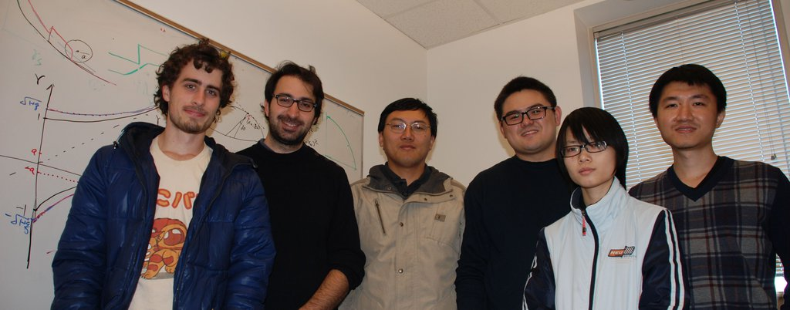

Galaxy and Cosmology Group
OMG
PoI

Current Group Members:
Zheng Zheng, PI
Shiyu Nie, graduate student
Xiaoju Xu, graduate student
Kevin McCarthy, graduate student
Previous and Short-Term Group Members:
Raphael Sadoun, (postdoc and visting scholar, 2013-2018)
Hong Guo, (postdoc 2013-2015, now faculty member at Shanghai Astronomical Observatory, Chinese Academy of Sciences)
Haojie Xu, (Utah PhD 2018ent, now postdoc at Shanghai Jiao Tong University)
Greg Engh, (Utah postbac and MS student)
Ethan Lake, (Utah undergrad, now PhD student at MIT)
Joshua Wallace (Utah undergrad, now PhD student at Princeton University)
Ju Zhu (UIUC undergrad, 2014 summer student)
Louis Oberto (Penn State undergrad, 2014 REU student)
Joseph Rowley (Utah undergrad)